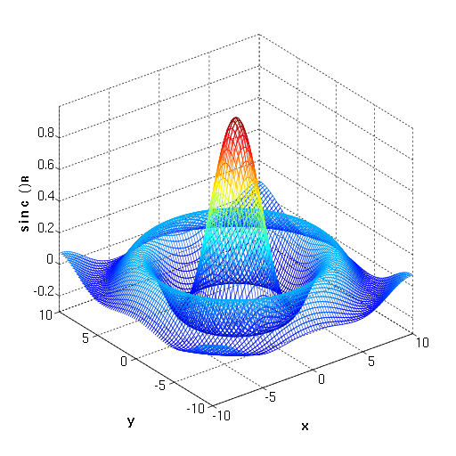
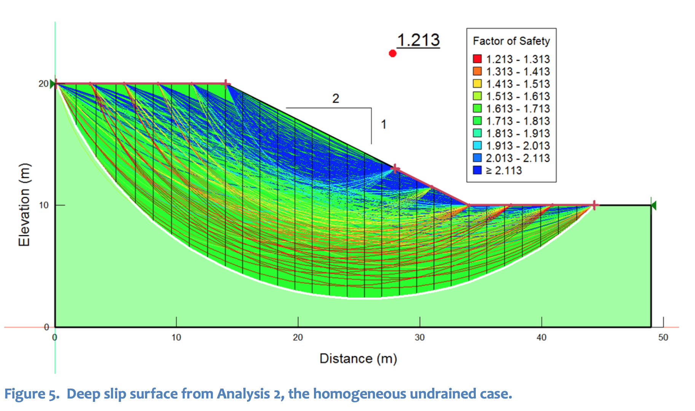

Alexius Academia
| Affiliation | : National Irrigation Administration |
| Company | : Syncsoft Solutions |
| Design Background | : 2012 - present : Irrigation Component |
| Programming | : 2010 - present |
CIVIL ENGINEERING
Programming is not only for Civil Engineers
It's for everyone!
3 Things
- How important programming is?
- Why should one learn to program?
- Programs are just tools.
How Important It Is?
Drafting
Invention of CAD softwares for drafting.
Pronto
Dr. Patrick J. Hanratty
1957
byDr. Patrick J. Hanratty
Sketchpad
Ivan Sutherland
1963
byIvan Sutherland

CATIA
Dassault Systemes
1981
byDassault Systemes

Autocad
Autodesk
1982
byAutodesk

Paid Softwares
Drafting
Structural Analysis

Land Survey
12d Model |
Autocad Civil 3D |
Hydraulics
Flowmaster
Math Notebook
Mathcad
Numerical Computing Environment
Matlab
Free Softwares
2D Drafting
LibreCAD
2D & 3D Drafting/Modelling
Draftsight (Free until 2018)
Structural Analysis
Structure3d
Structural Analysis
Edubeam
Open Channel Flow
aIrrigflo

Math Notebook
SMath
Numerical Computing Environment
Scilab

3 Things
How important programming is?
- Why should one learn to program?
- Programs are just tools.
Lot of tools are out there,

Sometimes if you can't find a solution, you have to create one.
On 2017, picasaweb stopped its services.

Do you want to know how many programming languages there are?
2,300
Just in 2001!
What is recommended in engineering?
C
C++
Visual Basic
C#
Basic
Fortran
Python
Java
D

Why use python in engineering?
Why python?
- Very easy to learn
- Cross platform
- Lots and lots of existing libraries
Easy to learn and fast to code.
Before you create a program.
Mainly, how is programming applied, to engineering?
thru
Numerical Methods
What areas are needed for applying programming to engineering?
Except the obvious ones...?
"Dealing with repetitive tasks..."
Sample Problems solved with programming
- Geotechnical Engineering
- Hydraulics
- Steel Design
- Reinforced Concrete Design
Slope Stability Analysis

By trial
Hydraulics
Created solution?
Another for hydraulics
3 Things
How important programming is?
Why should one learn to program?
- Programs are just tools.
We should use programs, not the other way around.
Useful links
https://ocw.mit.edu